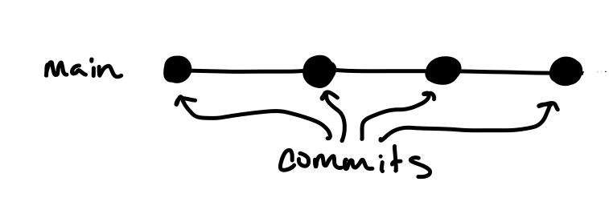

class: middle, center # Best Practices for Projects --- class: middle, center # ~~Best Practices for Projects~~ # Good Enough Practices for Projects --- # Purpose - Share advice on how to organize your work during the project phase - Introduce a template for organizing your project - Introduce git for version control --- # Notebooks .center[] --- # Notebooks - Treat each notebook like an experiment in a lab notebook - Give your file outputs unique names so that you don't overwrite them ```python import datetime # Generate a time stamp with YYYYMMDD-HHMMSS tstamp = datetime.datetime.now().strftime("%Y%m%d-%H%M%S") model_path = f'ModelName-{tstamp}' ``` --- # Alternatives to notebooks -- basic terminology **Script**: A Python file that’s intended to be run directly. They often contain code written outside the scope of classes or functions and might import modules, packages and libraries. -- **Module**: A Python file or directory of python files that’s intended to be imported into scripts or other modules. It often defines classes, functions, and variables intended to be used in other files that import it. A folder of python files will often contain a special `__init__` file that tells Python that there are modules within it. -- **Package/Library**: An umbrella term that loosely means “a bundle of code.” These can have tens or even hundreds of individual modules that can provide a wide range of functionality. Dependencies or requirements are defined and can be installed together with the package itself. Adapted from [RealPython](https://realpython.com/lessons/scripts-modules-packages-and-libraries/) --- # Project Organization We made a project based on the knowledge-extraction exercise as an example. ``` knowledge-extraction/ ├── notebooks/ │ └── 2024-08-26-test-model.ipynb ├── scripts/ │ └── train.py │ └── validate.py ├── src/ │ └── knowledge_extraction/ │ └── __init__.py │ └── data.py │ └── model.py ├── .gitignore ├── README.md └── pyproject.toml ``` --- # Setting up your project - Use the `example-project` repo as a template for your project - The package `cruft` will copy the template for you and prompt you to fill in information specific to your project From your home directory: ```bash pip install cruft cruft create https://github.com/ai-mbl/example-project ``` --- # Specifying your environment - What do you need to make your code run? - Pick a python version >=3.10 unless you have a dependency that needs an older version - List the packages you use in your code in your `pyproject.toml` - Install your code and its dependencies with `pip install -e .` ```toml [project] name = "knowledge-extraction" requires-python = ">=3.10" dependencies = [ 'matplotlib', 'torch', 'torchvision', 'tqdm', 'scikit-learn', 'seaborn' ] ``` --- # Why use git for version control? - Keep a record of your work and thought process over time - Return to a previous version when something breaks - Easily collaborate with others and develop code in parallel --- # Git commits .center[] - Each git commit is a snapshot of your work - Each commit represents a set of changes from the previous version --- # Git commits .center[<img src="https://miro.medium.com/v2/resize:fit:1400/format:webp/1*zj-d8TopjgBml2QVM-672w.jpeg" height=300>] - Your commit messages serve as a record of your changes and thought process behind them Image from [A Visual Introduction to Git](https://medium.com/@ashk3l/a-visual-introduction-to-git-9fdca5d3b43a) --- # Making a commit .center[] 1. Make some changes 2. Run `git status` or use the VSCode Source tab to check which files have changed 3. Tell git to track the changes by adding each file with `git add path/to/file` or the plus button from the Source tab 4. Make your commit with a note about why you made your changes with `git commit -m "your commit message"` or from the Source tab --- # Sharing your changes .center[<img src="assets/remote.png" width=500>] __Repository__: Your project folder with versioned files and their history __Clone__: A local copy of a repository __Remote__: A copy of your code hosted online (usually by Github) --- # Sharing your changes .center[] - `git push` to share your changes with the remote - `git pull` to retrieve changes others have made from the remote - If you have made local changes that conflict with changes in the remote, git will ask you how you want to resolve the conflict --- # Collaborating with git .center[] - Branches allow group members to work in parallel on different features in the code --- # Setting up git in VSCode - From the extensions tab, search for and install the Github Pull Request extension - From the new Github Pull Requests tab, click the sign in button to log in to your Github account - From the terminal, run the following configuration commands ```bash git config --global user.email "your-email@email.com" git config --global user.name "Your Name" ``` # Creating SSH Keys If you have any issues with connecting to Github through VSCode, you can instead create an ssh key. For the course, you need to make an ssh key on your remote machine. From a terminal connected to your remote machine, follow these instructions to setup a key and connect it to github: - [Generating a new ssh key](https://docs.github.com/en/authentication/connecting-to-github-with-ssh/generating-a-new-ssh-key-and-adding-it-to-the-ssh-agent#generating-a-new-ssh-key) - [Adding your ssh key to the ssh agent](https://docs.github.com/en/authentication/connecting-to-github-with-ssh/generating-a-new-ssh-key-and-adding-it-to-the-ssh-agent#adding-your-ssh-key-to-the-ssh-agent) - [Adding a new ssh key to your account](https://docs.github.com/en/authentication/connecting-to-github-with-ssh/adding-a-new-ssh-key-to-your-github-account#adding-a-new-ssh-key-to-your-account) - [Testing your ssh connection](https://docs.github.com/en/authentication/connecting-to-github-with-ssh/testing-your-ssh-connection) --- # Learn more about git - Ask your TA during the project phase! - Learn Git Branching: https://learngitbranching.js.org/ - Interactive visual tutorial for git on the web - `git gud`: https://github.com/benthayer/git-gud - Terminal based tutorial for learning git